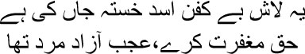

44

This shroudless corpse is indeed the heartbroken Asad’s
May God forgive him, his will was far too free
or three months after I reached Lahore, my mind was in a whirl, Mirza sahib. Sometimes I felt as though I was still in Bombay; sometimes as though I was at my friend Hasan Abbas’s house in Karachi; and at other times it seemed like Lahore after all. Every hotel in Lahore used to host music and dance performances at the time to collect money for Quaid-e-Azam Jinnah’s fund. I could not determine what I should do. A sandstorm seemed to be raging in the desert that was my head. Like a tangled montage of scenes on a giant cinema screen. One moment, Bombay’s markets and roads were visible, dissolving into the small trams and donkey-carts on Karachi’s narrow streets; the very next moment, one of Lahore’s riotous bars came into view. Where was I, exactly? Sitting in my chair like an Egyptian mummy, I was tossed about by waves of thoughts. ‘How long will you stay cooped up at home like this, Manto sahib?’
— But where should I go?
— You have to get a job. How will we survive otherwise?
— Who will give me a job, Shafia?
— If you could start visiting the industry people … By ‘industry’ she was referring to the Lahore film industry. Shafia didn’t know that the Lahore film industry was not worth its name at the time. Many film companies were heard of, they even had some sort of offices; but they had nothing to show besides the signboard outside. Producers used to brag of making films worth lakhs of rupees, setting up offices and hiring furniture for them, and then they’d disappear without even paying their bills at the small restaurants nearby. Each of them was a cheat. How could I expect those who lived on borrowed money to give me a job? But I really did need to work. The money I had brought from Bombay was almost exhausted. It wasn’t just household expenses; I had to pay for the liquor at Clifton Bar too. Gradually I realized that I was indeed in Lahore, and that I would have to spend the rest of my life in this same chaotic Lahore. Not just the refugees, but also those who had not actually moved from India were involved in the racket of acquiring a shop or a factory with a trumped-up story. Many people advised me to take this opportunity and get something for myself. I couldn’t bring myself to join the gang of robbers, Mirza sahib. Here the country had been partitioned because of misguided politics, and was I supposed to cash in on this and become a rich man overnight? It wasn’t possible to stoop so low. I had never seen such an atmosphere of uncertainty. If a man here smiled, another one was smothered in sighs of despair over there. The price of one man’s survival was another’s death. On the roads we could hear slogans, Pakistan zindabad, Quaid-e-Azam zindabad—long live Pakistan; long live Muhammad Ali Jinnah; and within those slogans I could hear smothered sobs. It wasn’t just people who wept, but also the birds and the trees. The refugees who had found no home but the streets stripped the bark off trees and lit fires with them on winter nights; how else were they to live? Hundreds of trees and branches were chopped down to be used as kindling for stoves. Only bare trees could be seen on the streets of Lahore—if you paid just a little attention, you could hear them crying. The houses all seemed dark with grief. People’s faces looked as though the blood had been sucked out of their bodies—paper figures, all of them.
I would either sit at home in a chair like a marionette, or wander about the streets of Lahore like a vagabond. I would observe the expressions on people’s faces and listen to their conversations. Yes, I would listen closely, devouring their discussions on their gains and losses, how their dreams had been shattered, even their nonsense. As I walked around and listened to people talk, the smog that had gathered in my mind lifted. The words and sentences that floated about, the warmth clinging to their bodies, the sobs that had dried into sighs, all percolated into me; when I returned home and sat in silence, these words and sentences tried to emerge. I felt as though every pore on my skin would burst—they—the words—were trying to force their way out in rage and misery and hatred—all lost words actually want to reach someone, Mirza sahib. It seemed that they wanted to live their migrant life through me.
I resumed writing gradually. I didn’t have much choice anyway. There was no film industry to supply stories with to make a living. So it was down to whatever I could make writing for newspapers and magazines. I used to hire a tonga for the day and go out. You could call me a peddler of stories. Asking the tonga to wait outside the newspaper office, I’d go inside and start writing my story. Stories served hot for instant cash. Then off to another newspaper or magazine office. This one wants a piece of satire; I sit down to write it out. Tuck the money into my pocket and off again in the tonga. I never did count my earnings; it wasn’t in my nature. If I made a reasonable amount of money, the first requirement was a drink, after which the rest went into household expenses.
When I moved to Lahore my drinking went out of control, Mirza sahib. Without any friends anywhere, the days ahead loomed dark. If I died my wife and family would have to take to the streets. Every now and then came the trance that made me think I was still in Bombay. I had expected Pakistan to give me the respect due to me as a writer; I had moved from India thinking of Pakistan as my own country. But soon I realized that they thought me nothing better than a stray dog. I wished I could be in an alcoholic haze all the time, alone on a hillock engulfed by fog. Besides the hours I needed to stay awake to write, there was nothing that could bring more peace than being sunk in a drunken stupor. Hundreds of people used to appear in this stupor—indistinct shadows, all of them—I lived like a haunted house. I used to talk incessantly with these shadow men. Shafia would shake me awake, destroying my reveries. As soon as the stupor left me my body would crave liquor according to its own compulsions. My madness would be further heightened. Shafia left no stone unturned in trying to release me from this alcoholic cycle. And the more she tried, the more I resorted to new ruses to get back into my world of drunkenness. I gathered a few pals; I was aware that they had no idea of Manto the writer; we were just drinking partners. When I had no money they were the ones who bailed me out, so how could I abandon them? Excessive drinking had pushed both mind and body into a corner, infuriating me when anyone offered sage advice. Ahmed Nadim Kasimi tried to persuade me many times to stop; for some time I heard him out in silence, but finally I grew furious and told him one day, ‘You’re my friend, Kasimi, not a mullah from a mosque who’s responsible for my moral character.’ Kasimi didn’t try to reform me again. I had a couple of old friends in Lahore, but they began to drift away from me too. My extended family wouldn’t even talk to me, walking away when they saw me. Oh hell, there’s Manto—let’s get away—the bastard will ask for a loan again. Yes, that was how low I’d stooped. How much did I make from writing anyway? I needed money for my drink every day, after all. I’d try to borrow money from anyone I ran into, sometimes lying that Shafia was ill, at other times that my daughters were sick. I was aware of the bottomless depths that my addiction was leading me into, but this blind dependency was beyond my control now. I couldn’t stay calm unless I had alcohol inside me, my hands and feet trembled, my temper grew even fouler.
I played my dirtiest trick when my eldest daughter Nighat had typhoid. Borrowing some money from a relation for medicine, I returned home with a bottle of whisky instead of pills for my daughter. Normally Shafia screamed and shouted when this happened, but she didn’t say a word this time. She looked at me with empty eyes for a long time, and then left a glass of water for me before leaving the room. I could hear Nighat’s fevered moans from the next room. As soon as I drank a sip of the whisky, neat, I vomited. In the next room I found Shafia putting cold compresses on Nighat’s forehead. Grasping her feet, I said, ‘Forgive me.’
— She has a very high temperature. Go to your room, Manto sahib.
— No. Forgive me. I swear by Nighat not to drink again.
— How many more oaths will you take, Manto sahib?
— Believe me … This time, really … I’ll start afresh, Shafia. Calmly Shafia said, ‘My energies are exhausted, Manto sahib.’
— Believe me this last time, Shafia. You know how determined I can be. I can do anything if I try hard enough.
Shafia smiled. —Very well. Go to bed now.
I sat down by Nighat, running my fingers through her hair. I wanted to hold her, kiss her. I was dying of shame, what kind of father was I to use the money for my daughter’s medicine to buy whisky? Forgive me, Nighat, beti. I wanted to draw her into my arms, but I did not have the strength anymore. Eventually Shafia began to pull me away, yelling, ‘Haven’t you caused enough harm already? Leave the girl alone, Manto sahib.’
— No. I’m going to spend the night by her side.
— Nighat’s going to get worse if you behave this way.
— She’s my daughter … I want to …
— Have mercy, Manto sahib. We are not your playthings. What do you think of yourself? You’d better kill all four of us instead.
Some people came into the room, drawn by the loud voices. Hamid’s wife merely said, ‘That’s enough, chachaji. This isn’t one of your drinking dens. Go away to your room.’
For the first time in my life, someone had dared to look me in the eye and speak to me like this, Mirza sahib. I was unable to retort. Coiling up in my shell like a snail, I returned to my room. I didn’t have the willpower to respond. Not humiliation, nor self-loathing—I felt as though I had nothing to fall back on. I had handed them the weapons to wound me with. I decided that I really wouldn’t drink anymore; I would have to start afresh in Lahore, run my household as efficiently as I did in Bombay.
The next morning I started with the household chores. I swept and swabbed every single room with my own hands, dusted the cobwebs on the walls and furniture. One of the chairs had a broken leg; I repaired it. I sold all the old documents and liquor bottles that had gathered. In the veranda I strung up a swing for the children. I bought a cage full of colourful birds at the bazaar. Nuzhat and Nusrat—my two younger daughters— ran up to me and hugged me. Their eyes were shining like stars. I wept, Mirza sahib. These two little girls could be so happy with such small things, but I had never noticed it in my drunken haze.
Shafia came and asked in a sombre tone, ‘What is this new madness, Manto sahib?’
— How can a home be built without birds, Shafia?
— Whose home are you talking about, Manto sahib?
— Why, ours, of course, Shafia. Why should I try to build someone else’s home?
— You want to build the home? So that you can destroy it all over again?
Gripping Shafia’s hand, I said, ‘Have faith in me this one last time, Shafia. And help me a little. I will build a home for us once more.’
— I have survived all this time only out of my faith in you, Manto sahib. Or else I’d have committed suicide long ago.
— Shame, Shafia. Don’t forget you have three daughters.
— Aren’t they your daughters too?
— Trust in me, Shafia; those nightmarish days will never return.
For some time I led a completely different life. I was very weak because I wasn’t drinking, for which I got vitamins and tonics. It wasn’t just our family, but everyone else around us who also joined the celebrations. Manto has given up drinking—no news could be sweeter for all of them. Not that any of them could quite believe it. This had happened several times before. This time too, Manto broke everyone’s trust. He got back together with his drinking pals in just a few days. The bottle re-entered the house. I could make out that my dependence on alcohol had reached an extreme point. I couldn’t write a word on the days I didn’t drink. And if I didn’t write, how were the expenses to be met? Survive or perish—alcohol became my final refuge, Mirza sahib.
I had come to Pakistan with such hope. Many questions were connected with this optimism. Would the new nation of Pakistan have a different literature of its own? If it did, what form would it take? Which of the two nations was the legitimate owner of the literature that had been composed in undivided India? Would this literature also be split into two? Would Urdu be utterly destroyed across the border? For that matter, what form would the language take in Pakistan? Would ours be an Islamic nation? Would we be able to remain faithful to the nation but still criticize the government? Would we have better lives than under the British? I did not get the answers to these questions, Mirza sahib. How could someone who ran his household by peddling stories afford the time to think about such weighty matters? Moreover, the Pakistan government was perpetually out to get me. There were charges of obscenity and fines for my stories ‘Thanda Gosht’ and ‘Upar, Neeche, aur Darmiyan’—‘Upstairs, Downstairs, and In Between’. Many writers and intellectuals of Pakistan wanted me to be imprisoned and taught a severe lesson. Regular appearances in court, continuous cross-questioning … I couldn’t take such pressure anymore, Mirza sahib. Drinking caused me pain, but so did abstinence. The doctor had declared that my liver was close to collapsing—my brain wasn’t functioning properly anymore either—I had no other option but suicide. Still, I did give up drinking a countless number of times. And fell even more severely ill each time. Once, Shafia asked, ‘Do you really want to give up drinking, Manto sahib?’
— There can be no bigger release in my life, Shafia.
— Then will you listen to what I say?
— Tell me.
— You need treatment for some time.
— Where?
— You will have to be admitted to the ward for alcoholics at the Punjab Mental Hospital. They will definitely cure you. You won’t feel the desire to drink again.
— Are you sure?
— Many people have been cured, Manto sahib.
— All right. I’ll admit myself. Call Hamid.
When Hamid appeared I told him, ‘Make arrangements for my admission to the hospital, Hamid. As quickly as possible.’
Hamid made all the arrangements the very next day. However, I had to run away before they could take me to the hospital. I was told that the hospital superintendent’s fee was thirty-two rupees. The money had to be collected. I took some advances from a couple of magazines, on the condition that I would deliver stories to them when I was released from the hospital. I borrowed some more money from one or two other people and came back home. They had thought that I had fled in order to avoid being hospitalized. But I was indeed admitted to the hospital. The first few days were terrible. A demon used to stir inside my body, demanding sustenance. But six weeks later, it was a different Manto who walked out of the hospital. My body was ravaged, it was true, but still my former sheen seemed to be in evidence. Believe me, my brothers, I didn’t drink for eight whole months after this. And besides a string of stories, I wrote all kinds of other things as well.
One day I told Shafia, ‘I’ve recovered. Let’s go away from Pakistan now.’
— Go where, Manto sahib?’
— To Bombay.
— You cannot forget Bombay, can you?
— Bombay is my second birthplace, Shafia.
— Who will give you a job in Bombay?
— Let me write to Ismat … I’m sure she can arrange something in Bombay.
— Ismat behen doesn’t enquire after you, Manto Sahib.
— She lives in her own world. She’ll definitely respond if I return to Bombay. You’re ready to go, aren’t you?
— I’ll go wherever you go.
I wrote to Ismat at once—I want to return to Bombay. I want to stay in India. Make arrangements for me, Ismat. So that all of us can go back. I am absolutely fine now. If you can find a job for me with a studio, we can spend our lives together again, all of us.
I wrote to Ismat twice or thrice more. She didn’t answer. Did Ismat believe till the end that I was an opportunist who had moved to Pakistan to look after his own interests? Or perhaps she had come to know that alcohol had consumed me completely, that I had no way of returning. But I waited for her letter every single day. My drinking also intensified in proportion. I passed the days in a drunken haze, holding conversations with the characters from my stories.
Yes Mirza sahib, I was dying, consciously dying a little every day. I lacked the courage to kill myself by putting a noose round my neck or taking poison or slitting my veins. I used to love myself and Shafia and our three daughters madly. So I chose the path of slow poisoning. I had no wish to stay alive in a country that had heaped nothing but calumny and condemnation on me. And I was only too aware of the burden I was becoming on my family with every passing day. Neither hatred nor pity—they did not even consider me a human being anymore.
One night in my sleep I heard someone whispering to me, ‘Manto bhai, Manto bhai …’
I opened my eyes to find Ismat at my bedside, crunching an ice cream bar between her teeth and smiling.
— When did you come, Ismat behen?
— Ages ago. I’ve been trying to wake you all this time.
— Where’s Shahid? Hasn’t he come.
— Of course he has. Get dressed quickly.
— For what?
— You’re going to Bombay.
— Bombay! I leapt out of bed. —Have you fixed up a job for me?
— You bet!
— Shafia … Shafia … I shouted. —Come quickly, Shafia. Didn’t I tell you Ismat couldn’t possibly ignore my letters?
Shafia came and put her arms around me. —What is it, Manto sahib? Did you have a bad dream?
— Give Ismat some nashta-paani. Where’s Shahid? Call him.
— Where’s Ismat, Manto sahib?
— Here she is … Right here … Where did she go? She must be hiding in your room, Shafia.
Shafia clasped me to her breast like a baby. Running her fingers through my hair, she made me lie down again. —Go to sleep, Manto sahib, go to sleep. Her fingers played like a feather all over me.
I woke up early next morning. The strains of a Punjabi folk song I had heard long ago wafted in from somewhere. I found Shafia asleep near my feet. Her face was glowing, as though she had been born only this morning. The Partition had not cast a shadow on it; it was not spattered with blood from the riots. She was a sleeping maiden in a Pahadi painting; a new world was being born around her. The sky, the water, the air, the clouds, the flying cranes, the deer and does—a celebration was underway in my room.
Suddenly my belly churned and vomit gushed out. A stream of blood spread across the bluish-yellow water in the bathroom sink. And then there was nothing but blood. I was startled when I rinsed my mouth out and looked at myself in the mirror, Mirza sahib. Who was this? Was it Saadat Hasan Manto, or was it Death himself? I patted his back. ‘You’ve won this time, Manto. Just hang on by the skin of your teeth for a few days more.’